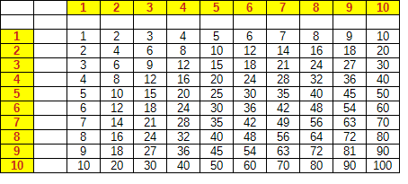
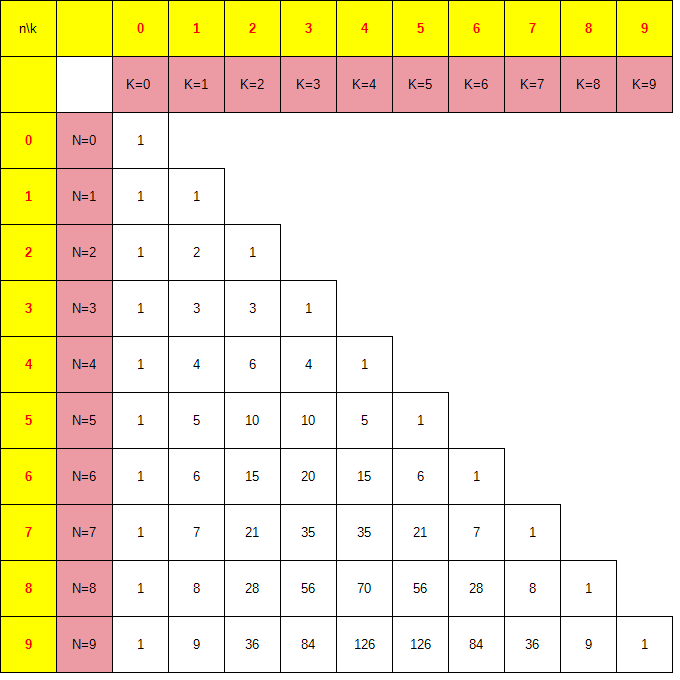

LEMENAGER Sarah binome19 Mesures Physiques Caen
 |
Un lien absolu contient toutes les informations dans l’adresse alors que dans un lien relatif indique le chemin qui se base sur l’emplacement du fichier html. |
|
La courbe de Gauss permet de représenter graphiquement la répartition des valeurs autour d’une moyenne et d’analyser la probabilité des évènements dans une population ou un phénomène aléatoire |
Les valeurs des coefficients du binôme de newton évolue en formant une bosse de dromadaire. C’est-à-dire que les valeur les plus hautes sont au milieu. |
|
 |
Ces résultats permettent de résoudre des polynômes à gros exposants pour que ce soit plus facile à retrouver. On appelle cette figure le triangle de pascal qui permet de résoudre les binômes de Newton. Résoudre: (a+b)⁴ |